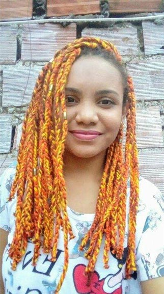

Funções / Continuidade
As informações de cada perfil são de responsabilidade das profissionais.
Você quer conhecer profissionais de quais estados?
Marcar/Desmarcar todos
CARREGANDO ...
 Ana Carolina M Alho (SP)
Ana Carolina M Alho (SP)
Ana Carolina M Alho
31 anos | Botucatu (SP)
karolkaos@hotmail.com
Sou formada em cinema, atualmente cursando Pós – Graduação/MBA - Comunicação e Marketing em mídias digitais na Estácio previsão de conclusão em 10/2016. Possuo experiência com continuidade, assistência de direção, realização de roteiro, edição e manutenção do cronograma. Supervisão de pessoas, coordenação de atividades e recebimento e distribuição de materiais. Conhecimento em Designer Educacional, atuando com roteirização de vídeo aula. E tenho também experiência com a fotografia still, que umas das minha grandes paixões, com isso incluí a experiência com montagem de estúdio, edição de fotografia e videos. Minhas principais habilidades são: Integridade e coerência, flexibilidade.
Outras atividades de Ana Carolina M Alho
Assistência de Direção |
Edição |
Fotografia Still |
Produção
Amostra de vídeo
 Anna Paula Furtado (SP)
Anna Paula Furtado (SP)
Anna Paula Furtado
21 anos | São Paulo (SP)
furtadoannapaula@gmail.com
Estou no oitavo semestre da faculdade de Cinema. Dirijo e faço o roteiro do meu TCC, um documentário sobre resistência feminina no Samba. Busco atuar nessas áreas, de cultura popular e questões de gênero e raça. Estou no começo da minha carreira mas sonho grande e não paro quieta, estou sempre à disposição!
Outras atividades de Anna Paula Furtado
Direção |
Fotografia Still |
Produção |
Roteiro
Amostra de vídeo
 Izabel Neiva (SP)
Izabel Neiva (SP)
Izabel Neiva
40 anos | Guarulhos (SP)
izabel_neiva@hotmail.com
Sou Bacharel em Artes Cênicas pela Escola Celia Helena, licenciada em artes com habilitação em teatro pela Faculdade Paulista de Artes, MBA pós graduada em cinema pela Lafilm Institute, técnica em atuação e direção pelo Inst Stanilavisk. Trabalhos: Assist Direção Longa metragem Off Line, Direção/Produção e atuação curta A Utima Chance, Direção e Produção Curta O Menino da moeda (proj em fase de captação). Dezenas de curtas como atriz, no teatro trabalhei com os diretores: Marco Antônio Brás, Claudia Schapira, Bete Dorgam, Simone Boer.
Outras atividades de Izabel Neiva
Assistência de Direção |
Atuação |
Direção |
Preparação de Elenco |
Produção |
Roteiro
Amostra de vídeo
 Karina Gama (RJ)
Karina Gama (RJ)
Karina Gama
24 anos | Rio de Janeiro (RJ)
kakahgama@gmail.com
Atualmente Estudante de Produção Cultural, no Instituto Federal do Rio de Janeiro (IFRJ). Durante dois anos, entre o período de 2009 e 2011, aperfeiçoei meus conhecimentos na "Escola de Artes e Tecnologia Oi Kabum!", adquirindo aprendizagem em Design Sonoro, Vídeo, Design Gráfico e outros temas vinculados ao Audiovisual, tendo especialização em Motion Design. No período entre 2010 e 2011 tive a chance de estudar na "Escola de Cinema 5 Visões, Formação Técnica Audiovisual", onde obtive conhecimento sobre Direção, Produção, Iluminação e Fotografia, tendo também especialização em Figurino e Maquiagem.Vale ressaltar minhas atuações na área de Audiovisual com cinema e TV atuando como Continuista, auxiliando na Direção cinematográfica.
Outras atividades de Karina Gama
Captação de recursos |
Produção
Amostra de vídeo
 Keila Serruya (AM)
Keila Serruya (AM)
Keila Serruya
Manaus (AM)
keilaserruya@gmail.com
Formada em comunicação social, manauara, diretora audiovisual, artista visual e produtora. Diretora de obras audiovisuais “Nessa Cidade Todo Mundo Já Bebeu na Bica” e “ASSIM”, que circularam em festivais nacionais e internacionais e hoje estão sendo exibidos em canal fechado. Produtora e assistente de direção em projetos series, curtas, longas metragens, espetáculos e intervenções. Esteve a frente de projetos como MIVA - Mostra Internacional de Videodança da Amazônia, Até o Tucupi, Papo por frame, série de TV na Boca do Povo, serie de TV infantil Buzzz&Bizz, Noite Negra, Grito Rock Manaus dentre outros. Atualmente faz parte do grupo Picolé da Massa e é gestora do DaVárzea das Artes.
Outras atividades de Keila Serruya
Assistência de Direção |
Cineclubismo |
Direção |
Edição |
Exibição |
Fotografia Still |
Pesquisa e desenvolvimento |
Produção
Amostra de vídeo
 Lygia Pereira (SP)
Lygia Pereira (SP)
Lygia Pereira
24 anos | Campinas (SP)
lygiapsc@gmail.com
Graduanda do último semestre do curso de Midialogia na Unicamp, possui experiência em produções audiovisuais (captação de imagem, direção e produção), sobretudo em documentários. Atuou na direção, roteiro e montagem do curta "CEP 05300"; na assistência de produção do documentário "Jogo Truncado", produzido pelo Canal Futura; na co-edição do coletivo de mídia independente Ô, Xavante!. Possui experiência com produção cultural, tendo trabalhado na 7ª Bienal de dança do Sesc de Campinas.
https://lygiapereirablog.wordpress.com/
Outras atividades de Lygia Pereira
Assistência de direção |
Assistência de fotografia |
Coordenação de projetos |
Direção |
Direção de fotografia |
Edição |
Exibição |
Fotografia still |
Pesquisa e desenvolvimento |
Produção
Amostra de vídeo
 Natalie Matos (MG)
Natalie Matos (MG)
Natalie Matos
21 anos | Belo Horizonte (MG)
natalie.m.moura@gmail.com
A única certeza que mora em mim é a de que a cada passo aprendo algo novo e construo minha identidade. Como uma árvore que cresce regada ao amor e às dificuldades, dá bons frutos e flores, mas também amadurece antes da hora e às vezes até mesmo cai, mas, sempre lembra que tudo que se vive fortalece suas raízes. E sempre quando eu precisar vou ao meu interior e discuto comigo, para entender esse meu eu que às vezes recusa falar e prefere apenas sentir. Gradua em Cinema e Audiovisual e Técnico em Artes Visuais, hoje tenho projetos de visibilidade ao protagonismo da mulher preta e a juventude periférica.
http://nataliem-moura.wixsite.com/nataliematos
Outras atividades de Natalie Matos
Animação |
Assistência de Direção |
Captação de Recursos |
Captação de Som |
Cenografia |
Correção de cor |
Direção |
Direção de Arte |
Direção de Fotografia |
Edição |
Fotografia Still |
Iluminação |
Mixagem e efeitos sonoros |
Pesquisa e desenvolvimento |
Preparação de Elenco |
Produção |
Roteiro
Amostra de vídeo
Pricilla Costa (PA)
Pricilla Costa
23 anos | Belém (PA)
costa.pricilla@hotmail.com
Idealizadora e Fundadora do Coletivo Audiovisual Tudo Preto!, em Belém do Pará.
Outras atividades de Pricilla Costa
Assistência de fotografia |
Direção |
Direção de fotografia |
Roteiro
Amostra de vídeo
 Ticiane Simões (AL)
Ticiane Simões (AL)
Ticiane Simões
33 anos | Maceió (AL)
ticiane.santana@hotmail.com
Sou atriz em Alagoas, portanto necessito exercer várias outras funções para sobreviver. Sou negra e indígena, embora admita não ter um aprofundamento de minha árvore genealógica. Sou "multifacetaria", inquieta e guerreira. Já fiz, e faço ainda, muitos trabalhos para o teatro e nos últimos anos venho me permitindo descobrir o cinema. Bem, sempre é mais fácil falar de um personagem que de mim...
http://m.facebook.com/ticiane.simoes
Outras atividades de Ticiane Simões
Atuação |
Direção |
Direção de Arte |
Dublagem |
Figurino |
Locução |
Maquiagem |
Oficinas e cursos livres |
Pesquisa e desenvolvimento |
Preparação de Elenco |
Produção |
Roteiro
Amostra de vídeo
 Victória Moreira (SP)
Victória Moreira (SP)
Victória Moreira
21 anos | Osasco (SP)
victoria.mslopes@gmail.com
Victória Moreira, 21 anos, estudante de rádio, TV e internet da faculdade Cásper Líbero. Experiência com os softwares: Illustrator, Photoshop, Premiere, After Effects e Audition.